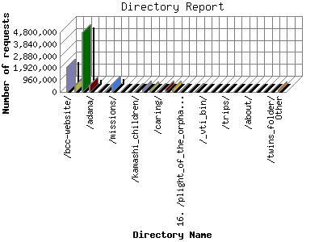

The Directory Report analyzes accesses to this web site's directories. This information can be useful in determining the most requested areas.
This report shows results with at least 0.010000 percent of the total bytes. This report is sorted by amount of bytes transferred.

| Directory Name | Number of requests | Percentage of the bytes | |
|---|---|---|---|
| 1. | /bcc-website/ | 2,021,259 | 21.41% |
| 2. | /forms/ | 511,388 | 13.65% |
| 3. | /images/ | 4,799,056 | 12.71% |
| 4. | /adana/ | 615,480 | 12.33% |
| 5. | /videos/ | 5,853 | 10.32% |
| 6. | /gif+banners/ | 57,558 | 6.65% |
| 7. | /missions/ | 623,464 | 4.43% |
| 8. | /mission-trips/ | 16,297 | 2.79% |
| 9. | /gif banners/ | 23,827 | 2.35% |
| 10. | /kamashi_children/ | 43,892 | 2.04% |
| 11. | /kevistweb/ | 232,762 | 2.02% |
| 12. | /bciacademyweb/ | 167,999 | 1.46% |
| 13. | /caring/ | 41,163 | 1.43% |
| 14. | /art/ | 236,120 | 1.38% |
| 15. | [root directory] | 240,425 | 0.79% |
| 16. | /plight_of_the_orphan/ | 35,065 | 0.67% |
| 17. | /banners/ | 4,792 | 0.61% |
| 18. | /sponsorship/ | 53,030 | 0.56% |
| 19. | /_vti_bin/ | 4,453 | 0.35% |
| 20. | /pictures/ | 7,367 | 0.28% |
| 21. | /ftp/ | 99 | 0.27% |
| 22. | /trips/ | 2,739 | 0.23% |
| 23. | /getting-involved/ | 16,484 | 0.14% |
| 24. | /more/ | 7,029 | 0.12% |
| 25. | /about/ | 10,543 | 0.12% |
| 26. | /partners/ | 11,044 | 0.11% |
| 27. | /children/ | 2,762 | 0.08% |
| 28. | /twins_folder/ | 96 | 0.07% |
| 29. | /founder/ | 7,776 | 0.07% |
| 30. | /faq/ | 6,389 | 0.06% |
| 31. | /need/ | 7,148 | 0.06% |
| 32. | /donate/ | 6,320 | 0.06% |
| 33. | /ben_songs/ | 368 | 0.06% |
| 34. | /css/ | 102,538 | 0.06% |
| 35. | /k_pages/ | 7,265 | 0.06% |
| 36. | /recommendations/ | 1,407 | 0.04% |
| 37. | /temp/ | 851 | 0.02% |
| 38. | /text/ | 1,868 | 0.02% |
| 39. | /dz/ | 2,259 | 0.01% |
| 40. | /literature/ | 1,347 | 0.01% |
| 41. | /copyright/ | 1,837 | 0.01% |
| 42. | /bamboo/ | 1 | 0.01% |
| [not listed: 525] | 16,722 | 0.11% | |
This report was generated on November 26, 2013 02:18.
Report time frame January 4, 2008 22:03 to November 25, 2013 23:59.
| Web statistics report produced by: analog 5.1 / Report Magic 2.21 |